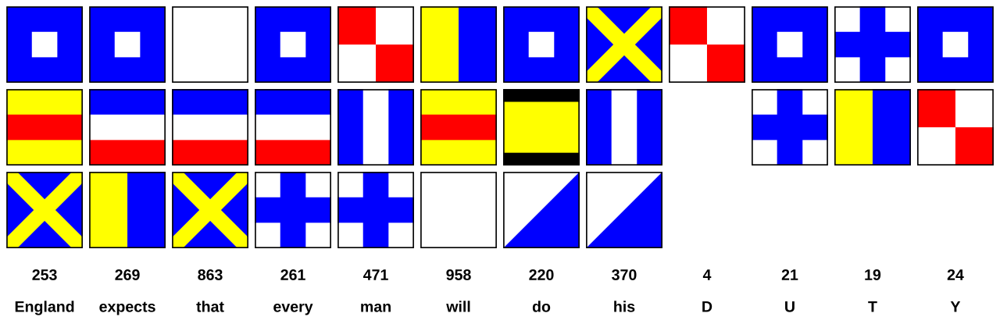

Signals, sayings & letters
His words
Nelson wrote constantly: some five thousand letters survive, the later ones in a sprawling left hand he taught himself at thirty-eight. He also had a gift for the remark that got repeated round a fleet by nightfall.
The signal
Hoisted in Victory at about 11.45 am on 21 October 1805, as the fleet ran down on the enemy.
“England expects that every man will do his duty.”

The signal was made with Sir Home Popham's Telegraphic Signals of 1803, in which ten numeral flags, hoisted three at a time, stood for some three thousand words. Eight of the words were in the book. “Duty” was not, and had to be spelt letter by letter. It took twelve hoists and about four minutes. Flag diagram by Ipankonin, CC BY-SA 3.0.
Nelson's first wording was “England confides that every man will do his duty”, confides meaning is confident. His signal lieutenant, John Pasco, pointed out that “expects” was in the vocabulary and “confides” would have to be spelt. “That will do, Pasco, make it directly,” said Nelson. So the gentler word gave way to the sterner one to save a few hoists of flags.
It was followed by his last signal, No. 16 in the ordinary signal book: “Engage the enemy more closely.” That one was left flying until it was shot away.
Before battle
“Before this time tomorrow I shall have gained a peerage or Westminster Abbey.”
“First gain the victory, and then make the best use of it you can.”
“The boldest measures are the safest.”
“Something must be left to chance; nothing is sure in a sea fight beyond all others.”
“In case signals can neither be seen or perfectly understood, no captain can do very wrong if he places his ship alongside that of an enemy.”
“Time is everything; five minutes makes the difference between a victory and a defeat.”
Under fire
“Westminster Abbey, or glorious victory!”
“I am killed. Remember me to my wife.”
“It is warm work; and this day may be the last to any of us at a moment. But mark you! I would not be elsewhere for thousands.”
“You know, Foley, I have only one eye. I have a right to be blind sometimes. I really do not see the signal.”
“See how that noble fellow Collingwood carries his ship into action!”
“This is too warm work, Hardy, to last long.”
The prayer before Trafalgar
At about eleven on the morning of the battle Lieutenant Pasco went down to the admiral's cabin to make a report and found him on his knees at his desk, writing. Pasco waited. This is what Nelson wrote in his private diary, the last entry in it.
“May the Great God, whom I worship, grant to my Country, and for the benefit of Europe in general, a great and glorious Victory; and may no misconduct in anyone tarnish it; and may humanity after Victory be the predominant feature in the British Fleet. For myself, individually, I commit my life to Him who made me, and may his blessing light upon my endeavours for serving my Country faithfully. To Him I resign myself and the just cause which is entrusted to me to defend. Amen. Amen. Amen.”
The last letters
Two days earlier, as the frigates signalled that the enemy was coming out, he had begun letters to Emma and to his daughter. Both were found unfinished on his desk after the battle. Emma wrote across hers: “Oh miserable wretched Emma. Oh glorious and happy Nelson.”
“My dearest beloved Emma, the dear friend of my bosom. The signal has been made that the Enemy's Combined Fleet are coming out of Port. We have very little wind, so that I have no hopes of seeing them before tomorrow. May the God of Battles crown my endeavours with success; at all events, I will take care that my name shall ever be most dear to you and Horatia, both of whom I love as much as my own life.”
“My dearest Angel, I was made happy by the pleasure of receiving your letter of September 19th, and I rejoice to hear that you are so very good a girl, and love my dear Lady Hamilton, who most dearly loves you. Give her a kiss for me. … Receive, my dearest Horatia, the affectionate parental blessing of your Father.”
In the cockpit
What Nelson said in his last three hours was written down by the surgeon, William Beatty, the chaplain, Alexander Scott, and the purser, Walter Burke, who were with him throughout. Their accounts agree closely.
“They have done for me at last, Hardy. My backbone is shot through.”
“Take care of my dear Lady Hamilton, Hardy. Take care of poor Lady Hamilton.”
“Kiss me, Hardy.”
“Thank God, I have done my duty.”
On the service, and himself
“I had the happiness to command a band of brothers.”
“Were I to die this moment, want of frigates would be found stamped on my heart.”
“Now, had we taken ten sail, and had allowed the eleventh to escape, when it had been possible to have got at her, I could never have called it well done.”
“If I had been censured every time I have run my ship, or fleets under my command, into great danger, I should long ago have been out of the Service, and never in the House of Peers.”
“I am ill every time it blows hard, and nothing but my enthusiastic love for the profession keeps me one hour at sea.”
“A left-handed Admiral will never again be considered as useful, therefore the sooner I get to a very humble cottage the better, and make room for a better man to serve the State.”
“I have fought contrary to orders, and I shall perhaps be hanged. Never mind: let them!”
“I cannot command winds and weather.”
What others said
“It certainly was so, and if ever you commit such a breach of your orders, I will forgive you also.”
“There is but one Nelson.”
“He is in many points a really great man, in others a baby.”
“I wish Nelson would stop signalling. We all know what we have to do.”
“To any other nation the loss of a Nelson would have been irreparable, but in the British fleet off Cádiz, every captain was a Nelson.”
“Sir, we have gained a great victory, but we have lost Lord Nelson.”
“We have lost more than we have gained.”
“Chaps that fought like the devil, sit down and cry like a wench.”